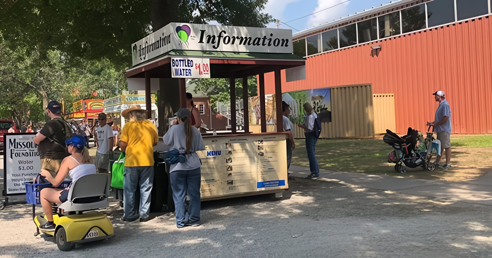

Home › FAQ
Frequently asked
Questions? Answered.
Real answers to 51 of the questions fairgoers ask most — no runaround. Type below to find yours fast.
- Aug 12–22, 2027
- Gates 7:30 am–10 pm
- 800-422-FAIR
No matches — try “parking” or call 800-422-FAIR.
Jump to: Tickets & admission · Getting here & parking · On the grounds · Accessibility & families · Animals & competitions · Policies & safety · Vendors, jobs & media
Prices and dates marked 2026 are from last year’s Fair · 2027 details confirmed closer to Fair time
Tickets & admission
When is the 2027 Missouri State Fair?
Thursday, August 12 through Sunday, August 22, 2027 — eleven full days at the Missouri State Fairgrounds in Sedalia. Looking further ahead: Aug 10–20, 2028 and Aug 9–19, 2029.
What time do the gates open?
Gates are open 7:30 am to 10 pm every day of the Fair. After 10 pm, use Gate 6 on Clarendon Road. Buildings, outdoor businesses and the carnival keep their own hours.
How much is gate admission?
2026 single-day gate prices were: Adult (13–59) $15, up to $15.56 with fees; Senior (60+) $10, up to $10.46 with fees; Youth (6–12) $4, up to $4.33 with fees; Kids 5 and under free. Advance adult tickets go on sale in July. 2027 prices will be confirmed closer to Fair time.
Does a Grandstand ticket include Fair admission?
No. Grandstand concert tickets do not include gate admission, so plan on both.
How much are carnival rides?
In 2026 an unlimited ride wristband was $37 on weekdays (up to $38 with fees), $47 on Saturdays and Sundays (up to $48.20 with fees) and $27 on Fair Finale Sunday (up to $27.80 with fees). Family packs ran 5 tickets for $8, 30 for $36 and 50 for $50. Watch for $2 Tuesday and Thrifty Thursday. Wristbands are good only on the day of sale; Wade Shows, Inc. operates the midway.
Are there group discounts?
Yes — groups of 25 or more are eligible for admission discounts. The more, the merrier.
What is Lunch Bunch?
Free lunch-hour admission for coworkers and friends. In 2026 it ran Aug 17–20, 11 am – 2 pm: buy a special Lunch Bunch ticket at the Centennial entrance after 11 am, return it by 2 pm and get a full refund. No refunds after 2 pm.
Where can I find daily deals and specials?
Advance gate and carnival tickets go on sale in July, and each day of the Fair brings its own specials and coupons, listed in the daily schedules as they are confirmed.
Getting here & parking
Where is the Fair?
Missouri State Fairgrounds, 2503 W. 16th St, Sedalia, MO 65301 — at the intersection of Highway 65 and 16th Street.
Which entrance should I use?
There are four: the Centennial Gate and Gate 11 on Highway 65, the Main Gate on 16th Street, and Gate 6 on Clarendon Road (the one to use after 10 pm).
Is parking free?
Yes. Single-day general public parking is free, with free trams to the admission gates. VIP public parking is $5 per day, cash only, and goes to the Missouri State Fair Foundation. All lots are under police protection.
How does exhibitor or concessionaire parking work?
Livestock exhibitors and concessionaires can buy hangtags: 1-day $5 (up to $5.36 with fees), 6-day $30 (up to $30.86 with fees) or 11-day $55 (up to $56.36 with fees). Hangtags aren’t sold to the general public, must be validated daily, and don’t allow overnight parking. Exhibitor admission doesn’t include parking.
Can I take a taxi?
Yes. Taxis must enter through Gate 11 on Highway 65 and may not go past the unloading areas.
Can I take the train?
Amtrak’s Missouri River Runner stops in Sedalia twice a day each way. Eastbound trains from Kansas City arrive at 10:27 am and 5:49 pm; westbound trains from St. Louis arrive at 11:50 am and 6:42 pm. Discounts include 50% for children, 15% for students and 10% for seniors and veterans.
How do the trams work?
Trams are free from the parking areas to the admission gates. Inside the fairgrounds, rides are 50 cents each. Seniors 60+ ride free every day with a sticker from the Senior Lounge.
Can I camp at the Fair?
Yes. The 60-acre public campground on Clarendon Road has about 95 first-come, first-served full hook-up sites with 50-amp service at $45 per day (up to $46.16 with fees, 2026 rate), then dry camping once those fill. Tents are welcome, and an underpass leads straight to the fairgrounds (Fair admission is charged there). The Fairgrounds also offers year-round camping.
Where can I stay nearby?
The Fair keeps a list of local hotels, motels and bed-and-breakfasts on mostatefair.com. Or bring the RV and stay on the grounds.
On the grounds
Is there a map of the fairgrounds?
Yes. The Missouri State Fair Map is available as a downloadable document, and an accessibility map for easy, quiet travel is available at every information booth and online during the Fair.
Where do I find the daily schedule?
Free daily guides are available at the Centennial Gate, Gate 11 and every Information Center. Events are added as they’re confirmed, with comprehensive schedules closer to Fair time.
Where are the Information Centers?
Information Centers, sponsored by Missouri Pork Association, are located throughout the fairgrounds for directions and general Fair questions. They also hand out free daily guides and Official Souvenir Programs.
Are there ATMs?
Yes, ATMs are located throughout the fairgrounds. Any Information Center can point you to the nearest one.
Which credit cards are accepted?
Public Campgrounds accept Visa, MasterCard, American Express and Discover. Under Missouri law, card payments carry a convenience fee of 2% + $0.25.
Is there Wi-Fi?
Yes — free Wi-Fi, sponsored by GoNetspeed, covers the fairgrounds and the public campground.
Where can I eat?
Corn dogs, funnel cakes and every fair favorite are served by vendors and concessionaires all over the grounds. Picnic tables are in the parking areas, the Kids Zone behind the MEC Building, in front of the Mathewson Exhibition Center and in the Highway Gardens.
Where can I buy souvenirs?
Official Missouri State Fair Souvenir Booths, run by the Missouri State Fair Foundation, are in front of the Historic Administration Building and just south of the Midway entrance. Souvenir Programs are free at any Information Center.
Are courtesy carts available?
Yes. Courtesy carts, sponsored by Bristol Care, Inc., are available during the Fair.
How can I get photos from the Fair?
Official Fair photographers post their photos on their own websites for purchase. The official site lists each photographer and their website.
Accessibility & families
What accessibility services are offered?
The Fair is committed to equal access for every guest. Center for Human Services runs two climate-controlled Sensory and Accessibility Resource Centers — one by the Main Gate Replica near the Centennial entrance, one in the Morton Building near the machinery area on Missouri Street — open 10 am to 6 pm daily. Each holds 10 people at a time, visits run 30–40 minutes (more on request), and anyone under 18 needs an adult.
Is there a sensory-friendly time on the midway?
Yes. From noon to 2 pm on two days of the Fair (Friday, Aug 14 and Thursday, Aug 20 in 2026), ride music and lights are turned off and game microphones are turned down. Everyone is welcome; a guardian may need to sign an assumption of risk.
Can I rent a scooter, wheelchair or stroller?
Yes, from the Missouri State Fair Foundation, 9 am – 9 pm daily. 2026 rates: electric mobility scooters $35 for 4 hours, $50 for 8 hours or $60 all day; wheelchairs $20 all day; single strollers $15 and double strollers $20 all day. Renters must be 21+; weight limit 350 lbs.
Where can I feed or change my baby?
At the Family Fun Center, sponsored by Children’s Trust Fund — a 450-square-foot, air-conditioned space with a baby changing and feeding area, wash basin and changing station.
Is there a place for seniors to rest?
The Senior Lounge is open daily inside the Log Home, with air conditioning, refreshments, maps and Fair information. Pick up your free-tram-ride sticker there.
Animals & competitions
What animals will I see?
Livestock shows feature cattle, swine, sheep, goats, poultry, rabbits, mules, donkeys and horses. The judging schedule lists every judged event.
How do I enter a competition?
Start with the Premium Guide — the guide to every State Fair competition — available starting in April. Questions go to the Competitive Entry Department at 660-530-5615 or entries@mda.mo.gov.
How does exhibitor admission work?
Exhibitors can buy daily exhibitor admission for $8 (up to $8.42 with fees) or an 11-day season pass wristband for $88 (up to $90.01 with fees) — from the Business Office by August 12 or with an entry form. They aren’t sold at the gate, and the limit is 40 tickets per exhibitor. Youth exhibitors 12 and under get a free admission wristband when their date of birth is on their entries. (2026 details.)
Are there contests fairgoers can enter?
Yes, the Fair hosts many contests open to fairgoers. Details are in the Special Contests section of the Premium Guide.
When are competition results posted?
Results are typically posted within 2–3 days, starting the second day of the Fair (Aug 14 in 2026).
Policies & safety
Can I bring a cooler?
Yes, as long as it holds no alcoholic beverages. Coolers are subject to search at the admission gate. No outside food, drinks or coolers are allowed in the Grandstand.
Can I bring my pet?
Pets aren’t allowed on the fairgrounds. The only animals permitted are service animals for persons with disabilities, on-duty police dogs, trained animals in a scheduled event, and animals entered in exhibitions or competitions. In the campground, pets must stay leashed inside your paid site.
Are bikes, skates or scooters allowed?
No — bicycles, skates, skateboards and scooters are prohibited, except motorized scooters for persons with disabilities and the scooter, wheelchair and stroller rentals from the Missouri State Fair Foundation.
Are weapons allowed?
No weapons are allowed anywhere on the Missouri State Fairgrounds.
What is the Grandstand security policy?
Every concert guest is screened with metal detectors or similar devices, and all bags are subject to search. Prohibited items must go back to your vehicle — the Fair won’t hold them, and unattended items are discarded.
Can I record video?
Video recording is permitted throughout the fairgrounds but prohibited at all times in the Grandstand.
What do I do in an emergency? Where is First Aid?
Report emergencies right away to any Fair staff member or Highway Patrol officer. The First Aid Station is on the west side of the Firehouse, east of the Highway Gardens.
I lost something. Where is Lost & Found?
Visit the Missouri State Highway Patrol office on the fairgrounds.
How will I hear about weather or safety updates?
Sign up for free email or text alerts through GovDelivery. Messages are informational and don’t replace other emergency warnings; carrier text rates apply.
Vendors, jobs & media
How do I get vendor or concessionaire space?
Complete and return a registration form describing your product or service. As space opens up, Fair staff review the forms and contact the applicants selected. Questions: vendors@mda.mo.gov or 660-530-5604.
Is the Fair hiring?
Fair employment opportunities are posted on the Employment page at mostatefair.com.
I’m with the media. Who do I contact?
The Marketing & Publicity Office: 660-530-5609 or mostatefair@mda.mo.gov. Entertainment submissions go to the same email.
What happens at the fairgrounds the rest of the year?
Non-fair events, year-round camping and building rentals are handled by the Missouri State Fairgrounds — see mostatefairgrounds.com or call 660-530-5604.
How do I contact the Fair?
Missouri residents call 800-422-FAIR (3247); out of state, 660-530-5600. General questions: mostatefair@mda.mo.gov. Mail: 2503 W. 16th Street, Sedalia, MO 65301.
Still have a question?
Missouri residents call 800-422-FAIR (3247) · out of state 660-530-5600 · or email mostatefair@mda.mo.gov. Contact the Fair